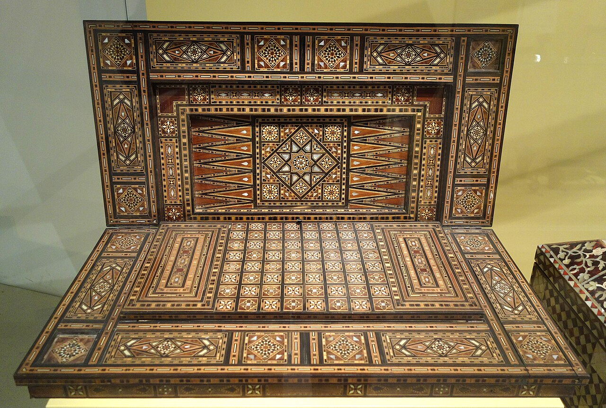
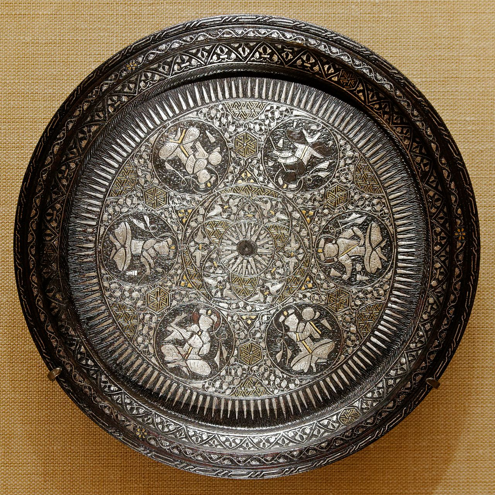
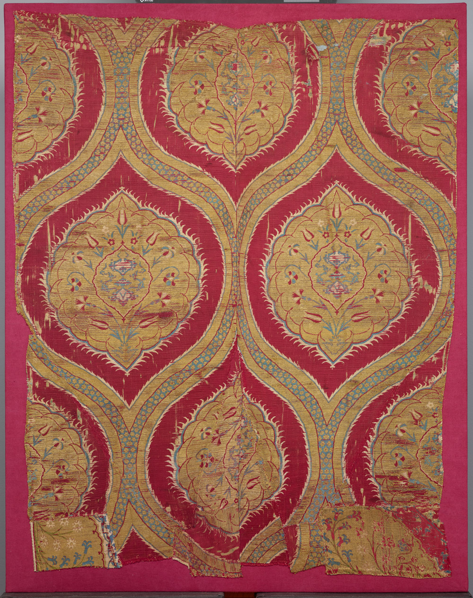
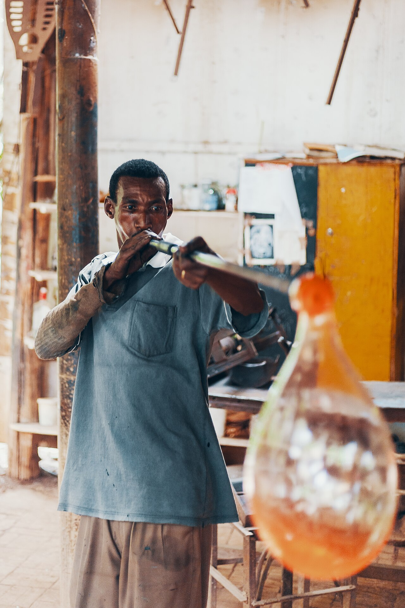
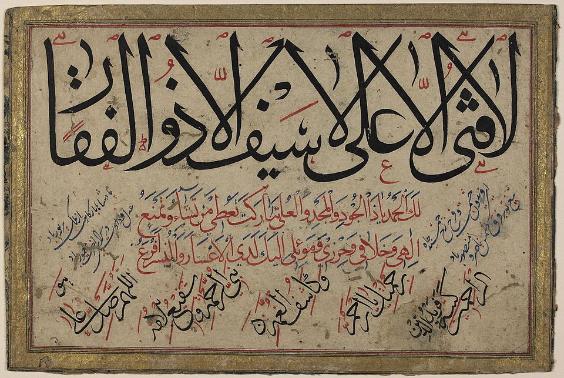
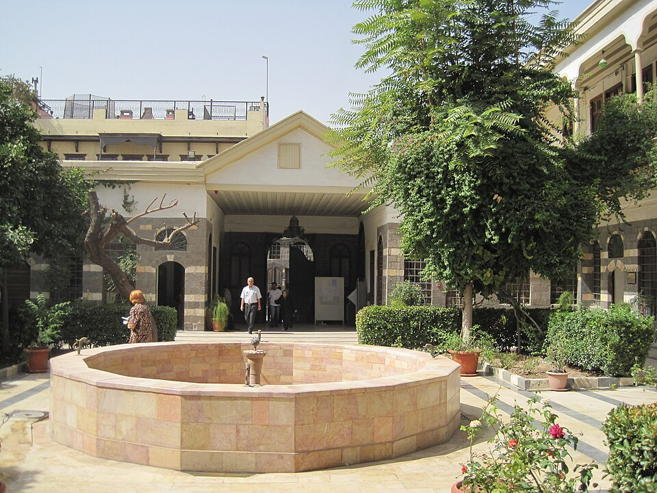

الموزاييك الدمشقي
فنّ تطعيم الخشب بالصدف والعاج بأشكال هندسية دقيقة، يزيّن الصناديق والطاولات والتحف.
فنون وصناعات يدوية توارثتها أجيال دمشق وحافظت على هويتها عبر القرون.
لا يقتصر تراث دمشق على المباني والمعالم، بل يمتدّ إلى الحرف اليدوية والفنون التي صنعت اسمها عبر التاريخ. ففي أزقّتها ورش لا تزال تنبض بالحياة، يعمل فيها حرفيون مهرة على إبداعات تتوارثها العائلات.
من النحاس المطروق إلى الموزاييك الدمشقي، ومن البروكار الحريري إلى الزجاج المنفوخ، تشكّل هذه الصناعات هوية بصرية وثقافية تميّز المدينة عن سواها.

أبرز الصناعات اليدوية والفنون التي اشتهرت بها دمشق.

فنّ تطعيم الخشب بالصدف والعاج بأشكال هندسية دقيقة، يزيّن الصناديق والطاولات والتحف.

صحون وأوانٍ نحاسية تُنقش يدوياً بزخارف عربية بديعة في أسواق المدينة العتيقة.

أقمشة حريرية فاخرة مطرّزة بخيوط ذهبية وفضية، اشتهرت بها دمشق منذ قرون.

صناعة الزجاج الملوّن يدوياً بأشكال فنية تزيّن البيوت الدمشقية التقليدية.

فنّ الخطّ والزخرفة الذي زيّن المساجد والمخطوطات وحافظ على جمال الحرف العربي.

عمارة تقليدية بفناء داخلي ونافورة وأشجار، تعكس فلسفة الحياة والجمال في المدينة.